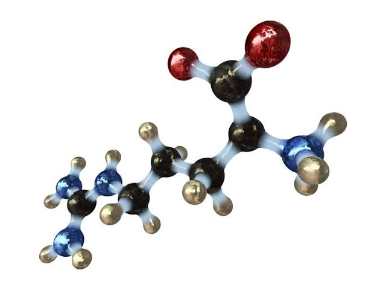

pqr
AMINO ACID
Autotrophic microalgae are a promising bioproducts platform.
However, the fundamental requirements these organisms have for nitrogen
fertilizer severely limit the impact and scale of their cultivation.
As an alternative to inorganic fertilizers.
